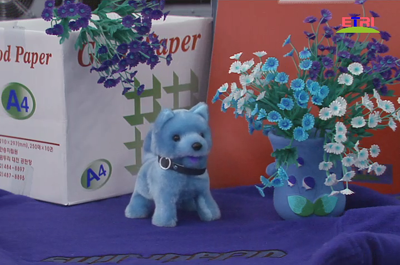
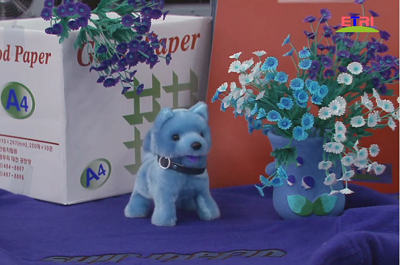
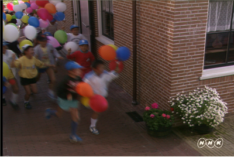
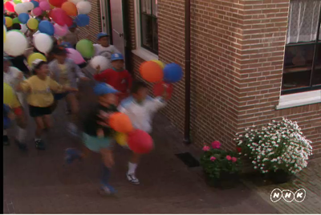
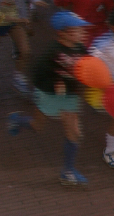
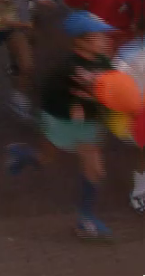
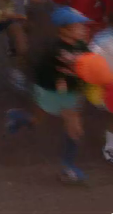

基于视觉感知的立体视频编码技术研究PVC
基于运动检测的H.264码率控制改进算法
改进算法的效率：视频序列（QCIF）客观质量PSNR在高码率（目标码率：128Kbps）和低码率（目标码率：24Kbps）的情况下，无论运动剧烈或场景切换时均取得较好的质量，平均比JVT-G012提高了0.07db到0.78db。 然而现有的主流视频编码技术在压缩视频图像时，并不区分图像中各个区域在视觉意义上的重要程度，在编码资源的分配过程中，也没有考虑HVS对视频场景感知的差异，因此现有的视频编码技术并不能很好的服务于视频图像的最终消费者—人眼。 充分结合视觉感知原理实现基于视觉感知的视频编码方案，在相同的主观质量条件下，有效降低视频图像的编码资源；或在相同编码资源条件下，改善视频图像的主观质量，具有重要的理论意义和应用价值。
-
原始图像 PSNR：41.39 Bits：13104; PSNR：39.68 Bits:：8184 PSNR：41.39 Bits：13104; PSNR：39.68 Bits:：8184 基于视觉感知的视频编码关键技术
(1)建立视觉感知模型：模拟人眼视觉感知特性 (2)设计基于视觉感知模型的视频编解码器：以视觉感知特性为指导分配视频图像编码资源，提高视频编码性能。
基于视觉感知的立体视频编码技术研究
本实验室基于视觉感知的视频编码研究主要针对立体视频编码。初期研究：首先根据裸眼光栅立体显示器的特性建立立体视觉感知模型；然后将立体视觉感知模型引入标准的立体视频编码框架中，根据人眼对不同区域的编码失真敏感度的不同进行残差预处理，降低视觉不重要区域的编码码率消耗，从而提高立体视频编码性能。
(a) Original picture 
(b) Reconstructed frame with PSVC (PSNR: 39.87dB, Bits: 1619) 
(c) Reconstructed frame with CSVC (PSNR: 40.99dB, Bits: 4053) 
(a) Original picture Reconstructed frame with PSVC (PSNR: 37.575dB, Bits:65408) 
Reconstructed frame with CSVC (PSNR: 37.025dB, Bits:65776) ) 


(d) Details comparison Fig. A sample frame of 'Balloon' sequence